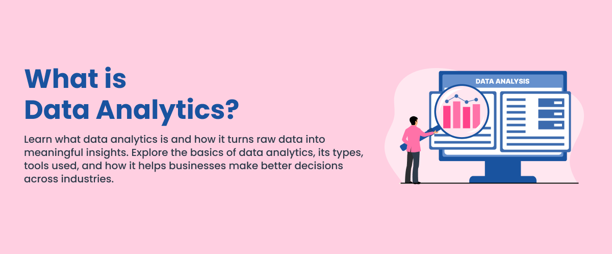

Understand the fundamentals, benefits and challenges of data analytics.
Data Analytics is the process of collecting, organising, analysing and interpreting data to discover useful information.It helps individuals and organisations identify patterns, understand trends and make better decisions.

Collects data from different sources for analysis.
Removes errors and inconsistencies from data to improve data quality.
Presents data using charts, graphs and other visuals.
Uses data insights to support better decision-making.
| Advantages | Explanation |
|---|---|
| Better Decision-Making | Helps organisations make informed decisions. |
| Identify Trends | Helps discover patterns and changes in data. |
| Improve Efficiency | Supports organisations in improving their processes. |
| Reduce Risks | Data can help identify potential problems. |
| Business Growth | Insights can support business planning and development. |
Data Analytics is widely used in the workplace to help organisations understand information and improve their daily operations.
Companies can use data analytics to understand customer behaviour, monitor sales performance and improve business operations.
| Tool | Main purpose | Common use |
|---|---|---|
| Microsoft Excel | Data organisation and analysis | Reports and calculations |
| Power BI | Data Visualization | Dashboards and business reports |
| Tableau | Data Visualization and analysis | Interactive dashboards |
| Google Looker Studio | Data reporting and visualization | Online reports and dashboards |